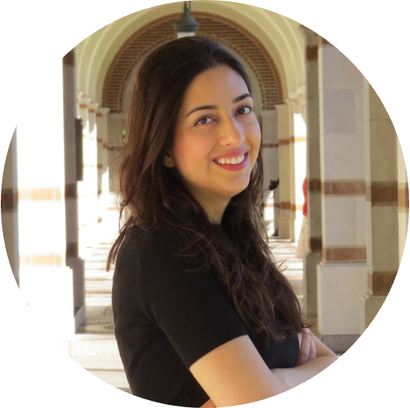
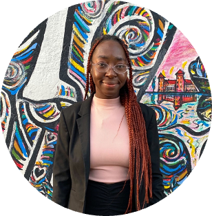
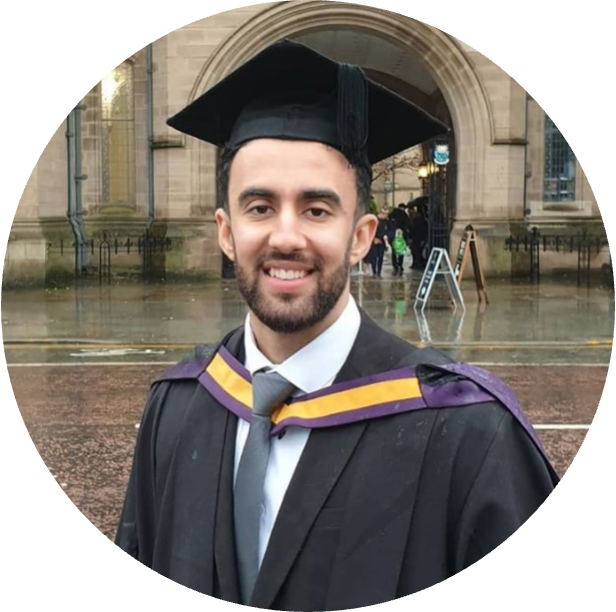
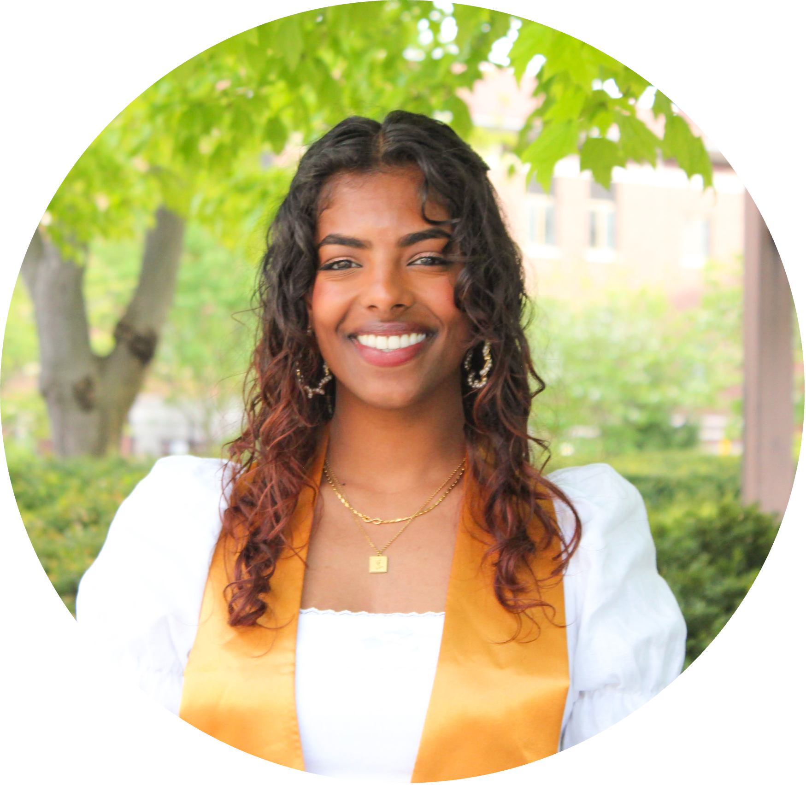
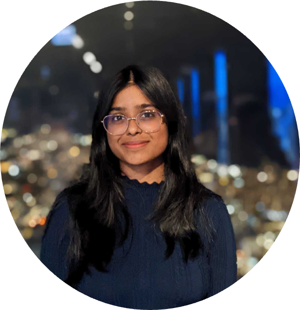
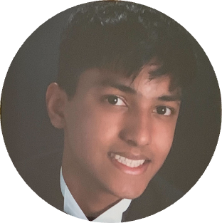
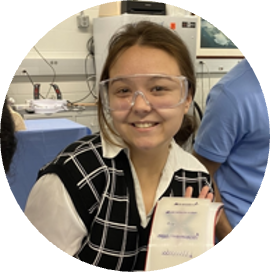

About Us
We are interested in unraveling the underlying physical principles that govern the dynamics,
statistics, and self-organization of nanostructured materials,
in and out of thermal equilibrium, from both fundamental and technological
aspects. To answer this we use a combination of experiment, theory, and computation
such as in-situ liquid phase transmission electron microscopy (LPTEM),
nanoscience and colloidal chemistry, stochastic thermodynamics, and machine learning.
Some of the ongoing projects in our group are:
Dynamics of nanoparticles in interaction with heterogeneous surfaces
Phase behavior and dynamics of biological macromolecules in liquid environment
Machine learning for finding the hidden physical rules in nanoscale systems

Team
Principle Investigator

Vida Jamali (
CV)
Email:
vida@gatech.edu
Vida is an assistant professor of Chemical and Biomolecular Engineering
at GeorgiaTech since Aug 2022. She is also a program faculty of Machine Learning
and Bioengineering PhD programs. She is also a member of the Institute for
Materials, Institute for Electronics and Nanotechnology, Institute for Bioengineering and Biosciences,
and Institute for Data Engineering and Science (IDEAS). Previously she was a postdoctoral researcher at
UC Berkeley working
with
Paul Alivisatos where she collaborated closely with
Kranthi
Mandadapu.
She received her PhD in Chemical and Biomolecular Engineering from Rice University advised by
Matteo Pasquali in
2017. Prior to that, she got her BS in Chemical Engineering from Sharif University of
Technology in 2011.
Graduate Students

Pagnaa Attah Nantogmah
BS Chemical Engineering, Drexel University, 2022
Email:
pnantogmah@gatech.edu
Pagnaa was born and raised in Accra, Ghana. She earned her Bachelor’s degree in Chemical
Engineering at Drexel University in 2022, where she worked with Dr. Joshua Lequieu on
modelling block copolymers and Dr. Aviel Chaimovich on simulating water-protein hydrophobic
interactions using Python and C++ respectively. Pagnaa joined the Jamali Lab in 2022 and
is excited to shift focus to experimental studies on nanoparticle diffusion using LPTEM.
Outside of work, Pagnaa loves watching tv shows, dancing, and immersing herself in new
cultures and experiences.

Zain Shabeeb
BEng Chemical Engineering, Newcastle University, 2018
MSc Advanced Process Integration and Design, The University of Manchester, 2019
Email:
zshabeeb3@gatech.edu
Zain was born and raised in Lahore, Pakistan and lived in Switzerland for four years during middle school.
Zain completed his BEng in Chemical Engineering and MSc in Advanced Process Integration and Design
from the UK. During his undergraduate studies at Newcastle University, Zain started developing
an interest in mathematical modeling and computer programming. For this reason, he pursued
a Master’s degree in Process Integration and Design, and in his free time, learned Python
programming, Machine Learning and Data Science. Before starting his Ph.D., Zain worked
in Fatima Group in Pakistan as a Supply Chain management associate, where he used
statistical time-series forecasting methods to forecast the prices of important commodities.
Zain is an avid fan of cricket, and in his free time loves to work out, play table tennis and pool.

Isabel Panicker
BS Chemical Engineering, Purdue University, 2023
Email:
ipanicker@gatech.edu
Isabel was born and raised in Suburban Chicago, Illinois. She earned her Bachelor’s
degree in Chemical Engineering from Purdue University in 2023. There, she worked
with Dr. Rakesh Agrawal in his Solar Energy Group where her research focused on
solution based synthesis of Multinary Sulfides for Photovoltaics. She has also
spent time as a Quality Engineering Intern at Tesla working on the continuous
improvement of the Drive Unit Manufacturing Line. Isabel joined the Jamali Lab in
2023 and is excited to be working with nanomachines and studying their
non-equilibrium behavior utilizing Liquid TEM. In her free time, she likes watching films,
drawing and painting.
Undergraduate Students

Naisargi Goyal
Email:
ngoyal45@gatech.edu
Naisargi is a fourth year Chemical and Biomolecular Engineering major at Georgia Tech from Jaipur, India.
She joined the group because she is interested in learning about nanoparticles and
image processing algorithms. Outside of work, she likes to watch movies, play
guitar and listen to music.
Gabriel Joaquim Sampaio De Almeida
Email:
galmeida9@gatech.edu
Gabriel is a fourth-year Chemical Engineering major at Georgia Tech from Manaus, Brazil.
He joined the Jamali lab to further develop his interest in fluids nanoscale behavior
and imaging. He is also a big fan of reality TV shows, concerts, and Brazilian barbecues.

Arko Roy
Email:
aroy339@gatech.edu
Arko is a second-year Chemical Engineering major at Georgia Tech from Morrisville,
North Carolina. He joined the Jamali Lab to learn more about the various mechanisms
governing nanoparticle synthesis as well as machine learning. In his free time,
he enjoys playing the piano, badminton, and cooking with friends.

Cecilia Reed
Email:
creed62@gatech.edu
Cecilia is a fourth-year Chemical Engineering major at Georgia Tech from Atlanta,
Georgia. She joined the Lab to learn more about data analytics and X-Ray Photoelectron
Spectroscopy. She enjoys watching movies of all kinds, reading, and cooking.